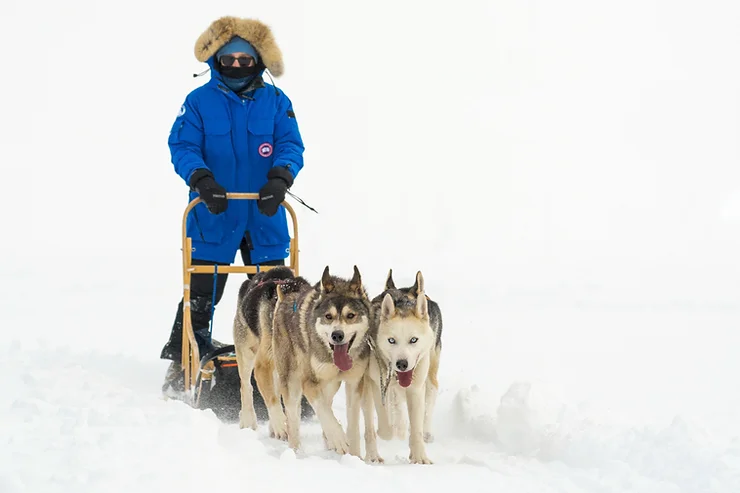
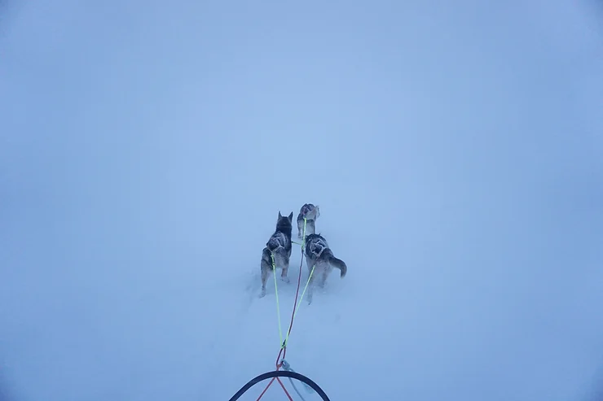
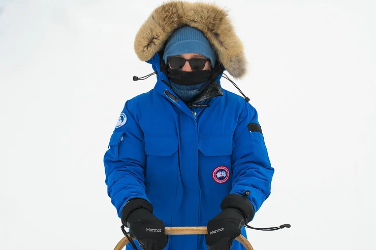

It could be the start of a Nordic joke - a Floridian and four Malamutes venture onto a frozen lake…all jokes aside this is exactly what happened in February 2018. I joined a group of explorers in Norway, for the annual Expedition Finse, located in a small mountain village, accessible only by train or ski's. The dog sled began innocuously enough, however, the dogs immediately caught on that I was in the market for a sled ride. As such, 25+ dogs began to howl in an uncoordinated canine symphony to express their utter excitement to be selected to pull my sled.
With 1.5 feet of fresh power, we began to plow through the snow rather slowly, leaving me with a false sense of security. As my beloved engines began to speed up, I thought it prudent to test the braking system… just in case, I reassured myself. I lifted my right foot from above the sled foot-plank to the metal teeth intended to slow my progress. Somewhere between the plank and the brake I fell off the sled, but neglected to let go…
It was only a few moments, but it felt like hours as my left hand uncontrollably gripped the sled and I was pulled through the snow head-first. I later called this my first snow facial. Somewhere between my fear of being abandoned in the middle of the frozen lake and fear of hypothermia, my right hand managed to find the foot brake and sink the metal teeth into the ice. We dragged to a halt. I stood up and attempted to shake out the icy snow that had found its way into every orifice of my body.
After regaining composure (this took a few moments), I released the break and off we went. After a loop around the lake, the dog owner ushered me inside as the blue hour drew to a close, restricting our already limited visibility. For those who haven't heard of blue hour, around twilight the quickly disappearing sun turns everything a beautiful blue hue.
The next morning, fellow explorer friends joined the dog sledding merriment. I went dog sledding on two additional occasions, each time made easier by the improved visibility, packed snow, and relinquished embarrassment of potentially impeding snow facials.
